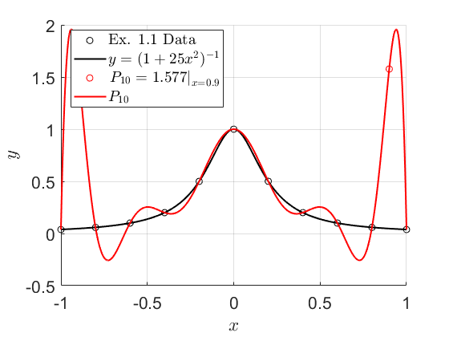
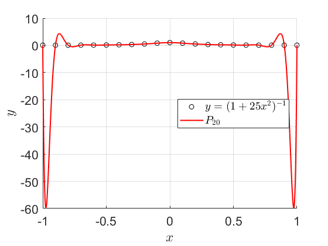
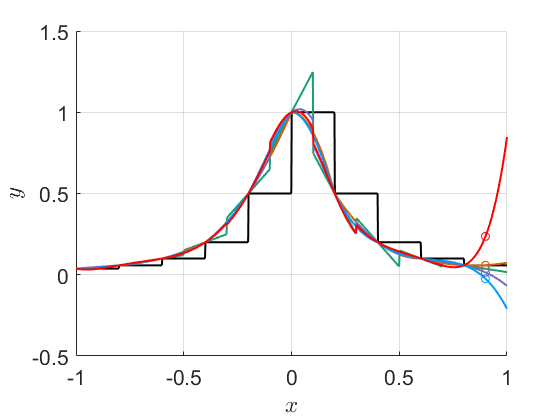

Contents
Preparation of the Workspace
clear all
clc
close all
Preperation of Figures
fontsize = 16;
set(0,'DefaultTextInterpreter','latex')
set(0,'DefaultAxesFontSize',fontsize)
set(0,'DefaultLegendFontSize',fontsize)
colors = ["#000000","#1b9e77","#d95f02","#7570b3","#0099FF","#FF0000"];
Problem 1
x = linspace(-1,1,11);
y = [0.038 0.058 0.1 0.2 0.5 1 .5 .2 .1 .058 0.038];
x_smooth = linspace(min(x),max(x),1e3);
y_exact = 1./(1+25*x_smooth.^2);
x_interp = 0.9;
n = length(x)-1;
query = x_interp;
y_interp = interpl(x,y,n,query) ;
for i = 1:length(x_smooth)
y_interp_smooth(i) = interpl(x,y,n,x_smooth(i));
end
figure
hold on
plot(x,y,'ko')
plot(x_smooth,y_exact,"k","LineWidth",1.5)
plot(x_interp,y_interp,"ro")
plot(x_smooth,y_interp_smooth,"r","LineWidth",1.5)
xlabel('$x$');
ylabel('$y$');
grid on
set(gca,'fontsize', fontsize)
legend("Ex. 1.1 Data","$y = (1+25x^2)^{-1}$",strcat("$\left. P_{",string(n),"}=",string(round(y_interp,3)),'\right|_{x=',string(query),"}","$"),strcat("$ P_{",string(n),"}$"),'Interpreter','Latex','location','best')
x_b = linspace(-1,1,21);
y_exact_b = 1./(1+25*x_b.^2);
n = length(x_b)-1;
for i = 1:length(x_smooth)
y_interp_smooth_b(i) = interpl(x_b,y_exact_b,n,x_smooth(i));
end
figure
hold on
plot(x_b,y_exact_b,'ko')
plot(x_smooth,y_interp_smooth_b,"r","LineWidth",1.5)
xlabel('$x$');
ylabel('$y$');
grid on
set(gca,'fontsize', fontsize)
legend("$y = (1+25x^2)^{-1}$",strcat("$ P_{",string(n),"}$"),'Interpreter','Latex','location','best')
 
Problem 2
x = linspace(-1,1,11);
y = [0.038 0.058 0.1 0.2 0.5 1 .5 .2 .1 .058 0.038];
x_smooth = linspace(min(x),max(x),1e3);
y_exact = 1./(1+25*x_smooth.^2);
x_interp = 0.9;
query = x_interp;
for i = 1:6
n = i;
y_interp_N(i) = interpN(x,y,n,query);
y_interp_L(i) = interpl(x,y,n,query);
for j = 1:length(x_smooth)
y_interp_smoothN(i,j) = interpN(x,y,n,x_smooth(j));
y_interp_smoothL(i,j) = interpl(x,y,n,x_smooth(j));
end
end
figure
hold on
for i = 1:6
plot(x_interp,y_interp_N(i),'o',"Color",colors(i));
plot(x_smooth,y_interp_smoothN(i,:),"Color",colors(i),"LineWidth",1.5);
end
xlabel('$x$');
ylabel('$y$');
grid on
set(gca,'fontsize', fontsize)

Problem 4
Problem 8
year = 1993:2:2007;
concen = [12 12.7 13 15.2 18.2 19.8 24.1 28.1];
year_smooth = linspace(min(year),max(year),1e3);
query = 2009;
n = length(year)-1;
concen_interp = interpl(year,concen,n,query);
for i = 1:length(year_smooth)
concen_interp_smooth(i) = interpl(year,concen,n,year_smooth(i));
end
figure
hold on
plot(year,concen,'ko')
plot(year_smooth,concen_interp_smooth,"r","LineWidth",1.5)
xlabel('Year');
ylabel('Toxin Concentration');
grid on
set(gca,'fontsize', fontsize)
legend("Data",strcat("$ P_{",string(n),"}$"),'Interpreter','Latex','location','best')
year_b = [year(1:2) year(5:end)];
concen_b = [concen(1:2) concen(5:end)];
query = [1997,1999];
n = length(year_b)-1;
for i = 1:2
concen_interp_b(i) = interpl(year_b,concen_b,n,query(i));
spline_interp_b(i) = interp1(year_b,concen_b,query(i),"spline");
end
disp(concen(3:4))
disp(concen_interp_b)
disp(spline_interp_b)
figure
hold on
plot(year,concen,'ko')
plot(query,concen_interp_b,'ro')
plot(query,spline_interp_b,'bo')
xlabel('Year');
ylabel('Toxin Concentration');
grid on
set(gca,'fontsize', fontsize)
legend("Data",strcat("$ P_{",string(n),"}$"),"Cubic Spline",'Interpreter','Latex','location','best')
Problem 9
Functions
function value = interpl(x,y,n,query)
indices = zeros(1, n+1);
x_dummy = x;
for k = 1:n+1
[dummy, index] = min(abs(query - x_dummy));
x_close(k) = x(index);
y_close(k) = y(index);
indices(k) = index;
x_dummy(index) = nan;
end
[~, sortOrder] = sort(indices);
x_close = x_close(sortOrder);
y_close = y_close(sortOrder);
for j = 1:n+1
for i = 1:n+1
if i == j
L_num(i) = nan;
L_den(i) = nan;
else
L_num(i) = query-(x_close(i));
L_den(i) = x_close(j)-x_close(i);
end
end
L(j) = (prod(L_num(~isnan(L_num)))/prod(L_den(~isnan(L_den))));
end
value = sum(y_close.*L);
end
function value = interpN(x,y,n,query)
indices = zeros(1, n+1);
x_dummy = x;
for k = 1:n+1
[dummy, index] = min(abs(query - x_dummy));
x_close(k) = x(index);
y_close(k) = y(index);
indices(k) = index;
x_dummy(index) = nan;
end
[~, sortOrder] = sort(indices);
x_close = x_close(sortOrder);
y_close = y_close(sortOrder);
div_diff = zeros(n+1, n+1);
div_diff(:,1) = y_close';
for j = 2:n+1
for i = 1:n-j+1
div_diff(i,j) = (div_diff(i+1,j-1) - div_diff(i,j-1)) / (x_close(i+j-1) - x_close(i));
end
end
value = div_diff(1,1);
prod_term = 1;
for i = 1:n
prod_term = prod_term * (query - x_close(i));
value = value + div_diff(1,i+1) * prod_term;
end
end